Explora las secciones
Selecciona una sección para ver toda la información del proyecto.
🔧 Materiales utilizados
Listado y descripción de cada componente principal.
💡 Materiales para luces intermitentes
Circuito y componentes para las luces de señalización.
🧑🏻💻 Programación
Código Arduino, explicaciones y conceptos.
👾 Simulacion en Proteus
Circuito y componentes para las luces de señalización.
📋 Instrucciones de armado
Este proyecto consiste en un carrito de proximidad controlado por un Arduino Uno. El sistema detecta objetos mediante un sensor ultrasónico y actúa sobre los motores (vía puente H L293D). Además incorpora un circuito para luces intermitentes (indicadores) y código para manejar la lógica de detección y respuesta.
Explicación de programación del carrito
El siguiente enlace contiene un video explicativo de la programación realizada en Arduino IDE y el mismo archivo del programa para que pueda descargarlo para su uso.
También cuenta con el archivo de simulación en Proteus si desea realizar las pruebas antes de realizar el proyecto en físico y se les comparte el archivo .rar que se necesita adjuntar al DATA de Proteus para poder hacer funcional la simulación con el sensor ultrasónico. Abrir carpeta en Drive
🔧 Materiales utilizados
Explicaciones detalladas
Arduino Uno

Es una placa de microcontrolador de código abierto que sirve como herramienta para crear proyectos electrónicos interactivos y de automatización. Se utiliza para conectar el mundo físico (con sensores) y el virtual (con software), permitiendo a los usuarios, desde principiantes hasta profesionales, desarrollar proyectos en áreas como robótica, domótica e Internet de las cosas (IoT).
Sensor ultrasónico
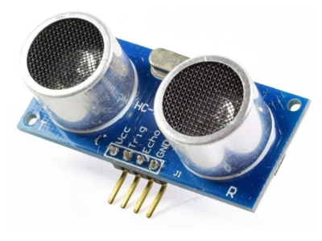Los sensores de ultrasonidos o sensores ultrasónicos son detectores de proximidad que trabajan libres de roces mecánicos y que detectan objetos a distancias que van desde pocos centímetros hasta varios metros. El sensor emite un sonido y mide el tiempo que la señal tarda en regresar y así mandar la información al arduoino.
Puente H L293D
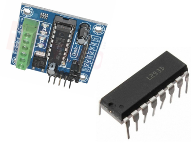El puente H L293D es un circuito integrado que se utiliza para controlar la velocidad y la dirección de giro de dos motores de corriente continua (DC). Funciona actuando como un controlador dual, que permite manejar cargas inductivas como motores y solenoides, y se integra fácilmente con plataformas como Arduino, ESP32 o Raspberry Pi.
Motor de 9V con engrane
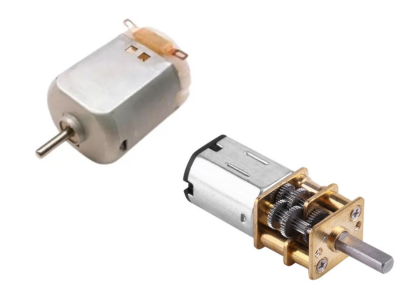Un motor de 9V funciona convirtiendo la energía eléctrica en energía mecánica, haciendo que un eje gire. Esto ocurre porque la corriente eléctrica crea campos magnéticos en las bobinas del rotor (la parte giratoria), las cuales interactúan con el campo magnético del estátor (la parte fija). El resultado es una fuerza que provoca un par y, por lo tanto, la rotación. Un conmutador invierte la dirección de la corriente en las bobinas a medida que giran para asegurar que la rotación continúe El engranaje de un motor de 9v se usa para aplicaciones que requieren más fuerza (torque) y menor velocidad de rotación que un motor normal, como en proyectos de robótica, juguetes, mecanismos de automatización y dispositivos electrónicos donde se necesita mover algo con más potencia, según CVR ELECTRONICA, Tecnopura y AliExpress. El sistema de engranajes reduce la velocidad del motor original para multiplicar su fuerza..
Batería de 9V
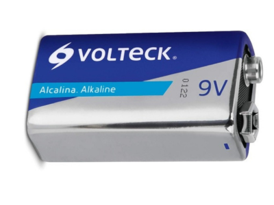Una batería de 9 voltios se utiliza principalmente para alimentar dispositivos electrónicos de baja potencia, como detectores de humo, mandos a distancia, y micrófonos inalámbricos. Su tamaño compacto y voltaje constante la hacen ideal para una variedad de aplicaciones, que incluyen juguetes, instrumentación musical (como pedales de efectos y guitarras electroacústicas), y algunos equipos médicos.
Cables Dupont
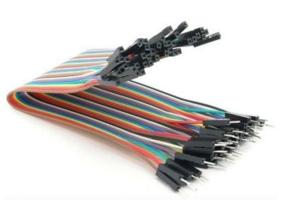Cableado Los cables Dupont macho-macho se utilizan principalmente para conectar dos placas de prototipado o de desarrollo (como Arduino o Raspberry Pi) o para conectar componentes electrónicos a una protoboard. Sirven para puentear pines de salida entre componentes, conectar sensores o actuadores y realizar conexiones temporales sin necesidad de soldar. Los cables Dupont macho-macho no soportan un alto voltaje y son más adecuados para voltajes bajos, típicamente de \(3.3V\) a \(5V\). Generalmente, aguantan unos \(300V\) de máximo, pero su capacidad de corriente suele ser limitada, con un límite de \(1A\), aunque algunos especificaciones mencionan hasta \(3A\). Usar voltajes o corrientes superiores puede causar sobrecalentamiento y dañar el cable.
Base de acrílico

Esta base sirve principalmente de apoyo para prototipo movibles ya que es compacto y tienen una variedad de agujeros que pueden sostener ya sea los motores el arduoino, puerto H, batería 9v, etc.
💡 Materiales para luces intermitentes
Descripción y función del circuito
El circuito de intermitencia usa transistores como conmutadores para encender y apagar grupos de LEDs. Los condensadores y resistencias configuran tiempos (RC) o ayudan a filtrar rizado. Este circuito puede ser simple (multivibrador astable) o controlado desde Arduino para mayor precisión y sincronización con la detección.
LEDs
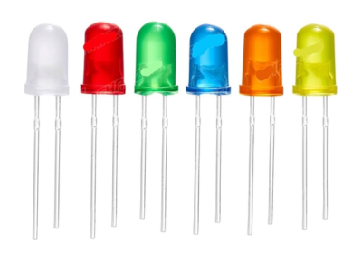Un LED (Diodo Emisor de Luz) sirve para producir luz de manera eficiente, convirtiendo la energía eléctrica en luz visible mediante un semiconductor. Se utiliza en una amplia gama de aplicaciones, como iluminación doméstica y comercial, señalización (semáforos, pantallas), indicadores en aparatos electrónicos, iluminación en automóviles y aplicaciones médicas. Sus principales ventajas son la durabilidad, la eficiencia energética y la capacidad de producir luz en varios colores.
Condensadores
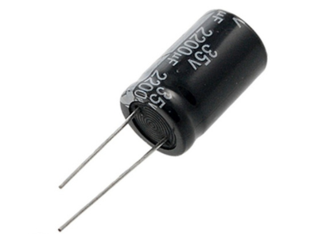Un condensador sirve para almacenar energía eléctrica en forma de campo eléctrico y liberarla posteriormente. Esta capacidad lo hace útil para aplicaciones como arrancar motores, alimentar el flash de una cámara, suavizar voltajes inestables, filtrar señales y compensar la energía reactiva en sistemas eléctricos
INTEGRADO NE555
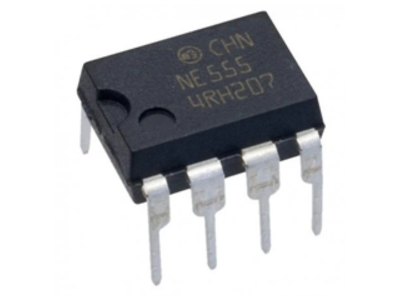El Circuito Integrado NE555 es uno de los componentes electrónicos más populares y utilizados. Se trata de un temporizador (timer) muy estable y versátil, capaz de generar: Temporizaciones (retardos de tiempo) con gran precisión, desde microsegundos hasta horas. Pulsos (señales de onda cuadrada). Oscilaciones (funcionando como oscilador).
Resistencias 220 Ω y 5k/10k
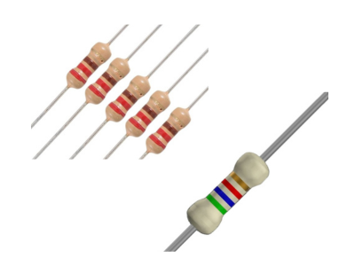Sirven para limitar o controlar el flujo de corriente eléctrica en un circuito, actuando como un obstáculo para la electricidad. Sus usos específicos incluyen limitar la corriente, como en la protección de LEDs, o para funciones como división de voltaje, temporización (con capacitores) o control de ganancia en amplificadores
Recomendación
Para un control simple y seguro, se puede manejar los LEDs desde pines digitales del Arduino usando transistores como drivers, o implementar un multivibrador externo si se desea independencia del Arduino.
PROGRAMACIÓN
Para la programación del comando usado en el Arduino Uno, se trató lo posible por incluir un código que sea sencillo para que, quien quiera realizar este proyecto no se le dificulte entender cómo hacer cambios si necesita realizarlos.
CONST INT
En Arduino se usa para declarar una variable de tipo entero (int) cuyo valor es constante y no se puede modificar durante la ejecución del programa. Ejemplo: const int pinLED = 13;
UMBRAL__DISTANCIA
Para usar un umbral de distancia en Arduino, debes leer la distancia de un sensor (como el ultrasónico HC-SR04) y luego usar una declaración if para comparar ese valor con tu umbral. Si la distancia está por debajo del umbral, se ejecuta una acción; si está por encima, se realiza otra acción, lo que te permite activar dispositivos o generar alertas según la proximidad.
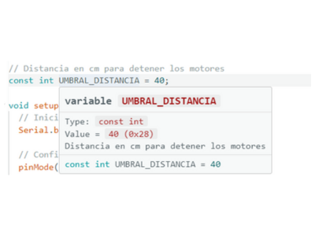SERIAL.BEGIN(9600)
En Arduino inicia la comunicación serial a una velocidad de 9600 bits por segundo (baudios), lo que permite enviar y recibir datos entre la placa Arduino y la computadora a través del Monitor Serial del IDE. Esta velocidad debe coincidir con la configuración del Monitor Serial para que la comunicación sea exitosa
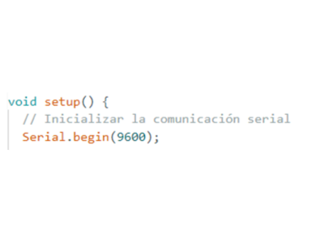PINMODE()
En Arduino es una función que configura un pin digital como entrada o como salida. Se declara dentro de la función void setup() y se utiliza con INPUT o OUTPUT
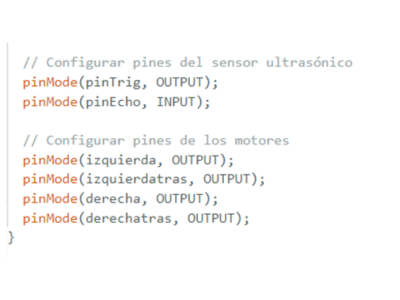LONG
En Arduino, long es un tipo de dato entero de 32 bits (4 bytes) que puede almacenar números con signo, desde -2,147,483,648 hasta 2,147,483,647. Se utiliza para almacenar números enteros más grandes que los que puede manejar el tipo int, especialmente en placas que usan int de 16 bits, y también es útil para cálculos donde el resultado puede exceder el rango de int.
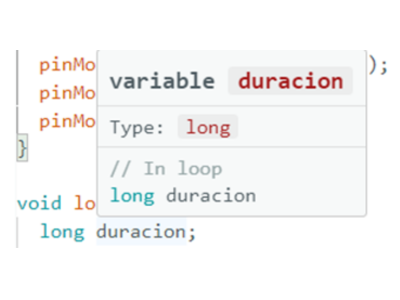FLOAT
En Arduino, float es un tipo de dato que almacena números con decimales (de punto flotante), utilizando 32 bits (4 bytes) de memoria para representar valores entre aproximadamente −3.4×1038 y 3.4×1038. Se usa comúnmente para valores analógicos y continuos porque ofrece mayor precisión que los números enteros. Para declararlo, se utiliza float nombre_variable = valor;
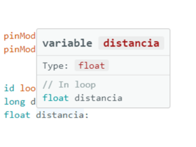DIGITALWRITE
La función digitalWrite() en Arduino establece un pin digital en estado HIGH (alto) o LOW (bajo). Esta función requiere dos argumentos: el número del pin y el estado deseado (HIGH o LOW), y debe usarse después de que el pin haya sido configurado como salida con la función pinMode(). HIGH equivale a 5V (o 3.3V en placas de 3.3V), mientras que LOW equivale a 0V
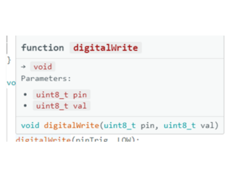DELAYMICROSECONDS
La función delayMicroseconds() en Arduino se utiliza para pausar la ejecución del programa durante un tiempo especificado en microsegundos. Es similar a delay(), pero ofrece una resolución de tiempo mucho más precisa para retardos muy cortos.
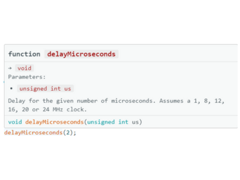SERIAL.PRINT
La función Serial.print() en Arduino se utiliza para enviar datos desde la placa Arduino al ordenador a través del puerto serie, y visualizarlos en el Monitor Serie del entorno de desarrollo (IDE) de Arduino.
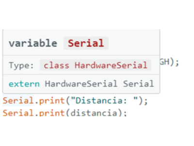SERIAL.PRINTLN
La función Serial.println() en Arduino se utiliza para enviar datos al ordenador a través del puerto serie y, crucialmente, añadir un salto de línea después de los datos.
IF
El condicional if en Arduino (que es C/C++)(lenguaje de comunicación) es una estructura de control fundamental que permite que tu programa tome decisiones. Ejecuta un bloque de código específico solo si se cumple una determinada condición.
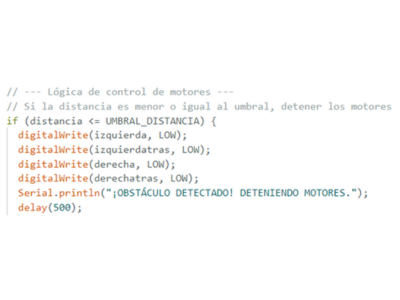ELSE
El condicional else en Arduino (lenguaje C/C++)(lenguaje de comunicación) se utiliza siempre en combinación con la estructura if. Proporciona una forma de ejecutar un bloque de código alternativo cuando la condición especificada en el if resulta ser falsa.
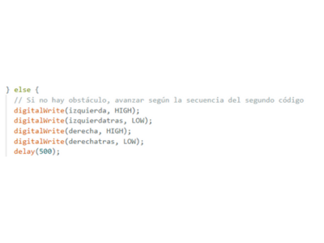👾 Simulación en Proteus
Descripción general
Los siguientes componentes se podrán encontrar de la siguiente manera si desea realizar la simulación en Proteus:
SENSOR ULTRASÓNICO
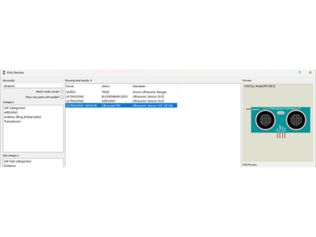ARDUINO UNO
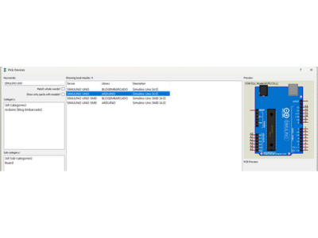PUENTE H (L293D)
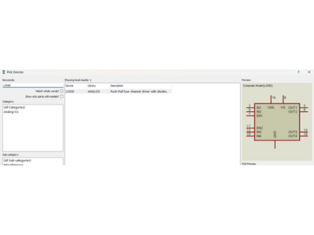MOTOR DE 9V
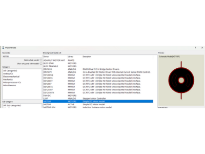RESISTENCIA VARIABLE (POTENCIÓMETRO)
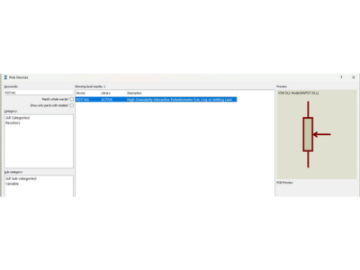SIMULACIÓN ARMADA
La simulación quedaría armada de la siguiente manera:
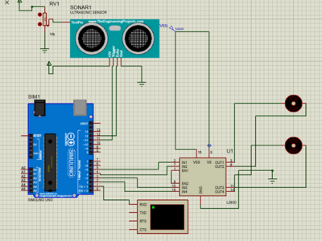🧨 Instrucciones
Paso 1
Soldadura de los motores
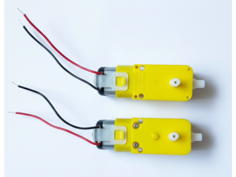Paso 2
Instalación de rueda loca a la base de acrílico
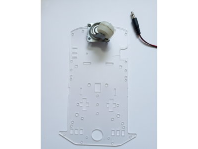Paso 3
Se pegan los motores a la base de acrílico
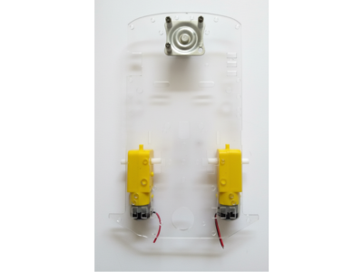Paso 4
Colocar el modulo de puente H (L293D) a la base de acrílico
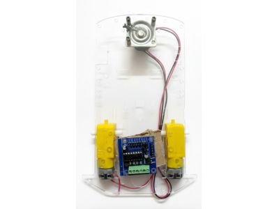Paso 5
Instalación de las llantas
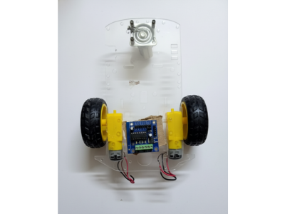Paso 6
Se conectan los pines de cada motor (A y B)
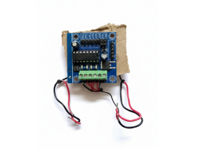Paso 7
Insertamos el Arduino Uno a la placa de acrílico
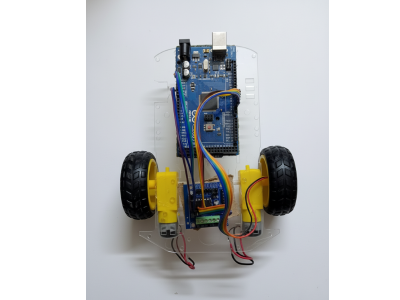Paso 8
Instalación de cables a los pines predestinados en la programación de Arduino
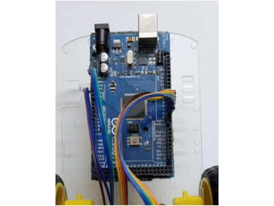Paso 9
Se instala el sensor ultrasónico al Arduino y al carrito
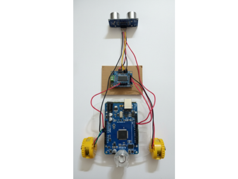Paso 10
Por último, la batería se coloca al Arduino y empieza su función
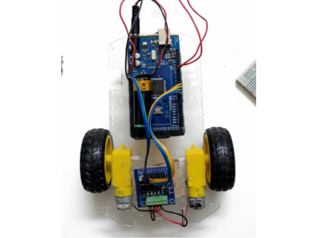